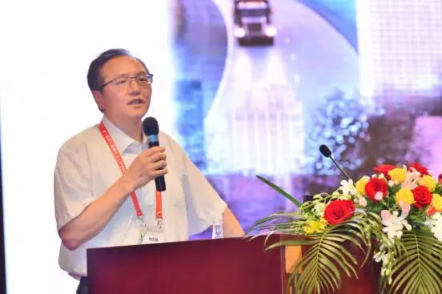
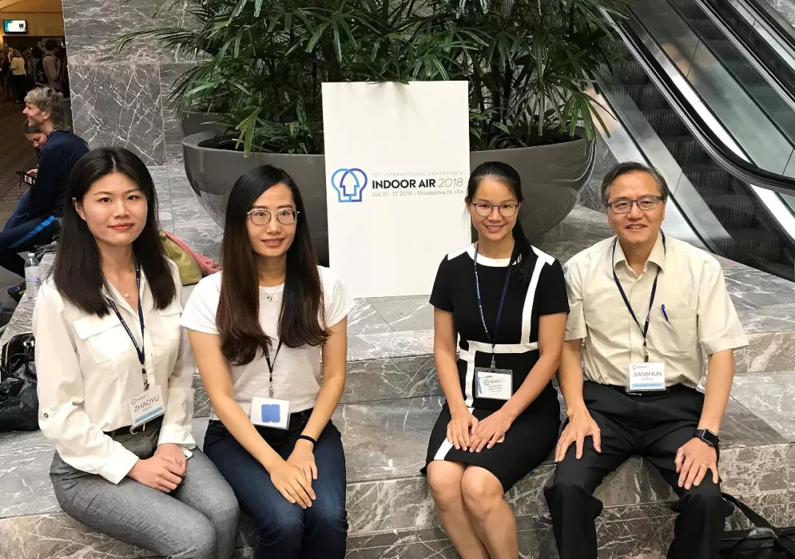

首页>>
科研项目>>
科研项目
国际会议
国内会议
讲座论坛
人员动态
绿色建筑与城市环境国际研究中心
International Research Center for
G
reen
B
uildings &
U
rban
E
nvironment
国际会议
【20190724】张建舜教授受邀出席第一届华人能源与人工环境国际学术会议
【20180722】中心团队参加第十五届国际室内空气品质与气候会议（Indoor Air）
详情报道
张建舜教授受邀出席第一届华人能源与人工环境国际学术会议
第一届华人能源与人工环境国际学术会议于2019年7月20-22日在中国成都金牛宾馆成功举行。本次学术会议以建立全球华人合作和创新交流平台为宗旨，主要分享清洁能源利用、人工环境能效提升及环境品质改善等方面的最新成果，就相关领域的热点和难点进行深入探讨和交流。 会议由西南交通大学、上海交通大学、美国科罗拉多大学以及英国赫尔大学联合主办，中国制冷学会指导，四川省制冷学会承办。袁艳平教授为大会主席，代彦军教授、翟志强教授、赵旭东教授为大会共同主席。
会议共设置包括4位院士报告的403个学术报告、30场专题研讨会、10个口头报告分会场、6个海报展示分会场，收到1083篇海内外论文摘要投稿。 来自全球205个单位、1057名参会代表共同呈现了一场属于全球能源与人工环境领域华人学者的学术盛宴！
会议开幕式于7月20日上午隆重举行，美国科罗拉多大学翟志强教授作为大会共同主席主持了开幕式。

张建舜教授受邀作大会致辞
7月20日上午的大会报告由上海交通大学代彦军教授和英国赫尔大学赵旭东教授主持。大会邀请的中国科学院院士、西安交通大学陶文铨教授作了题为《数值风洞及大气边界层流动中的一个基本问题》的报告、清华大学李先庭教授的报告题目为《利用自然能源降低空调供热系统负荷与能耗》。
张建舜教授报告题目为《智能建造环境系统研究和开发》（待完善）。
会期三天除了精彩绝伦的大会报告，还有涵盖人体热舒适、空调能效提升技术、建筑内外环境微气候和污染物传播、人工智能和大数据技术在人工环境中的应用、城市与建筑系统模拟仿真、运载器人工环境、建筑节能技术、可再生能源利用技术、 相变储能技术和建筑／城市通风等30多个研究方向的分会场主题报告及论坛、口头报告和海报展示、Energy and Built Environment学术新人奖评审。
第一届华人能源与人工环境国际学术会议不仅让代表们享用了一场饕餮学术盛宴， 组委会还携手南京天加环境科技有限公司为海内外华人精英们带来了一场美食之旅。“天加之夜—欢迎晚宴”再次展现了成都这座城市的热情与多彩，更有美妙的歌声及精彩的节目为晚宴助兴，为大家带来了一个把酒言欢、共叙友情的美妙夜晚。
中心团队参加第十五届国际室内空气品质与气候会议（Indoor Air）
第十五届国际室内空气品质会议于7月22日至7月28日在美国费城召开。
Indoor Air是国际室内空气品质与气候学会（the International Society forIndoor Air Quality and Climate, ISIAQ）的官方会议。
Indoor Air始于1978年，每3年（近三届为2年）举办一次。会议的目的是介绍和交流有关室内空气污染，健康和高效室内环境以及建筑能耗等方面的前沿研究方向和研究思路。该会议是室内空气品质、建筑科学领域世界级顶尖学术会议，每届会议有逾千位来自世界各地不同背景的科学家与会。今年会议由美国德雷塞尔大学承办，会议共有空气净化与渗透，建筑模拟与CFD，舒适与感知，浓度与暴露，源与散发，通风与HVAC系统，微生物与湿度，化学与转化，健康效应与流行病学等九个子课题。
我中心助理研究员梁卫辉和施珊珊参加了本次会议并做精彩演讲
（待完善）
。

友情链接： 南京大学； 南京大学研究生院； 南京大学建筑与城市规划学院
@Copyright2019 南京大学绿色建筑与城市环境国际研究中心 地址:江苏省南京市汉口路22号南京大学鼓楼校区